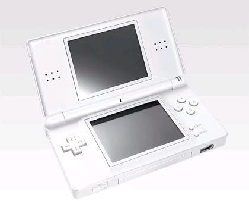
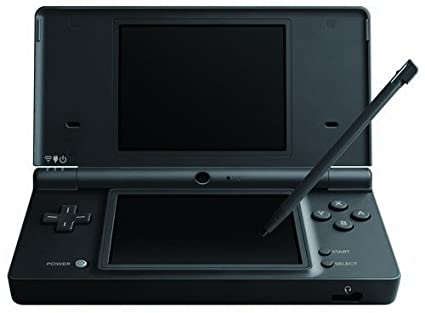
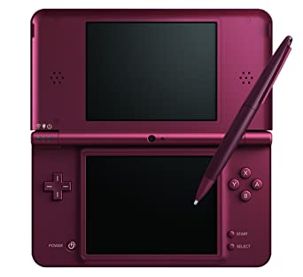

The first iteration of the Nintendo DS family of systems. Initially meant as an experiment such as the Virtual Boy, the Nintendo DS set foot on the industry as the new flagship Nintendo handheld, and a significant evolution from the successful Game Boy line of portable consoles.
Built with two screens and touch input, it paved the way for developers to come up with crazy outside-the-box ideas for new games, thus forever changing the industry.
Nintendo DS Lite
A slicker, lighter and smaller Nintendo DS reedition, retaining processing power and Game Boy Advance retrocompatibility and improving screen brightness and battery life.

This stylish model gave the DS the upgrade in design it needed, so much it became the norm for all subsequent DS and even 3DS consoles.
Nintendo DSi
Entering the new age of mobile devices, the DSi stepped in as the third iteration of the DS line. This new model let people take photos and download games from DSiWare. The DS went from a gaming handheld to a full-fledged multimedia hub.
At expense of dropping support for GBA titles, it brought increased CPU power, a new user interface, two cameras to snap photos and both internal memory and SD card support to store music, DSi Ware games and pictures.

Nintendo DSi XL
It turned out the DSi was not only popular among young users. To compensate, the last iteration of the DS console came with a considerable increase in size to please everybody.

Retaining all the DSi qualities, this XL model increases both screen sizes by an inch to improve readability, plus improving battery life and coming with a bigger Stylus.